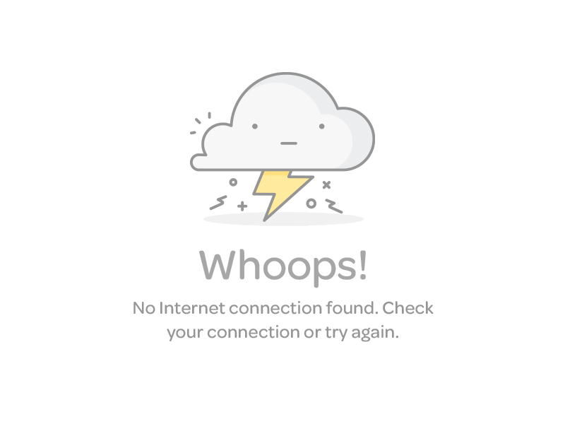

<div id="orderHistoryWrapper">
    <div *ngFor="let order of orders">
      <app-order-item [order]="order" (onOrderConfirmed)="showConfirmationPopUp($event)"></app-order-item>
    </div>
</div>

<div id="ordersPagination" *ngIf="pages != 1 && pages != 0">
  
  <button class="btn btn-success"
          *ngFor="let page of ordersForPages"
          (click)="getOrdersForPage(page.pageNumber)">
          {{ page.pageNumber }}
  </button>


  
</div>

<div *ngIf="!onlineMode">
  
</div>

<ng-container *ngIf="isConfirmationPopUpEnabled">
  <app-confirmation-popup (orderConfirmed)="onOrderSubmit()"></app-confirmation-popup>
  <!--(orderConfirmed)="onOrderSubmit(this.formData)"-->
</ng-container>
 
